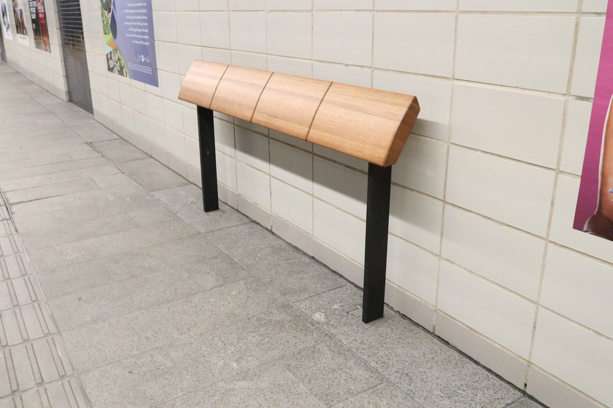

Defensive Design is meant to deter 'undesirable' parties from using particular public spaces, or to prevent people from using public spaces in unintended ways.
Such undesirable parties can include the animals with which we share this planet, and our unhomed neighbors.
Unfortunately, it has the side effect of designing against the disabled, the elderly, and children - arguably some of the most vulnerable populations amongst us.
Defensive Design can take many forms. A lack of infrastructure also speaks to a government that has largely forsaken their most vulnerable populations, including the elderly, the disabled, pregnant women or anyone with small children, and the unhomed.
